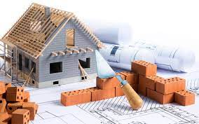

Circunvalación Alto Comedero Sur

Desde la Ruta 9, altura Los Alisos, hasta Palpalá, con conexiones en calles y avenidas de Alto Comedero
Sería una prolongación de la ruta provincial 8, pero sobre el otro margen del río Los Alisos.
Conectaría distintas arterias de Alto Comedero por el sur.
Nuevo Acceso a Perico y Monterrico

Un nuevo acceso a la ciudad de Perico desde la autopista 66 por el Barrio Santo Domingo.
Eliminaría la congestión que actualmente vive esa ciudad, y sería un beneficio para los productores y vecinos de la zona.
Playa de residuos

Contenedores al nivel del suelo dónde las personas puedan arrojar basura sin costo
En General Pico, La Pampa, ya funciona
Tren Urbano Perico (Aeropuerto) - Yala

La estación Ferroviaria de Perico colinda con el Aeropuerto de Jujuy, y desde allí existen conexiones ferreas hacia el Ramal y Salta, posibilitando su extension hacia esos destinos en el futuro.
En su trayecto atravesaría la ciudad de Palpalá, el Barrio Alto Comedero, Malvinas, San Pedrito, Centro, Huaico, Los Molinos, Reyes y Yala.
Permitiría aliviar el trafico particular y de transporte público en el Valle de Jujuy. La extensión ferroviaria es muy inferior y de menor complejidad geográfica que la del proyecto "Tren a la Quiaca".
Puente, Parque y Costanera Los Perales

Puente con acceso a Ruta 9 en el "distribuidor Los Molinos"
Avenida costanera que tendrá acceso a distintas arterias del Barrio Los Perales, compitiendo en importancia y comodidad con las Avenida Illia y Pasteur.
Paquización con caminería de las zonas aledañas, actualmente utilizadas por los vecinos con fines recreacionales.
Nuevo Hospital Provincial de Alta Complejidad

La pandemía dejo en evidencia lo importante que es contar con infraestructura para la salud.